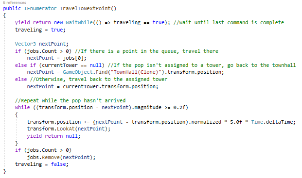

Tower Defense Project
Background
This project started as an idea between my friend and I for something to do over winter break in 2024. Originally we had planned to get started right away. I came up with the premise for the game and I would also be responsible for all the code, while Kevin Kershaw, would be responsible for the graphics, models, and UI implementation. This quickly started to fall apart as Kevin didn't have the amount of time available that he expected and the UI would be left up to me in the future. The project has many stretch goals that would make it extremely unique in the Tower Defense genre, but the base gameplay is quite standard, with some twists here and there.
The premise of the game is that you are a military architect for an expanding kingdom and you must design defenses for a new town that is being build. Waves of enemies will come to attack the townhall, and if it falls you fail. You can build defenses through resources you collect in the level. Wood, stone, and metal are scattered around and can be harvested through the appropriate method. Pops are the ones that harvest the resources under your command. By default you start out with 5 pops living in the townhall. These pops can be assigned to a logging camp to harvest wood which is done by removing trees that you designate. Using this wood you can build new camps to collect stone and metal, or build certain defensive towers like the archer tower. You must then assign pops to these towers to operate and stop the enemies from advancing. This is the core gameplay loop.
Disclaimer
This project is currently at a minimum viable product state, where the core gameplay loop is implemented and can be played. I have put this project on hiatus for the time being to work on the Tycoon project. As stated in the background of that project, the goal of it was to improve my knowledge of UI systems in unity and grow comfortable with them so that I can come back to this project and make it the best it can be.
Challenges
This project came with no shortage of challenges, but there are two in particular I want to mention: Pop movement and UI. When I first started implementing the pop movement I had decided to use an IEnumerator method since it could act as a queue while also containing the code for moving the pop. In hindsight, this could have been done using the Update() method perfectly well, but I decided at the time that I wanted to try doing it this way. I ended up running into a lot of issues with pop movement that were probably a result of this method, and when I come back to this project I plan to do a rewrite of it to make it simpler and less bug-prone. I do think the solution I went with was very enjoyable to make since I wasn't very familiar with IEnumerators at the time, and I still think there is a certain novelty to it.
UI implementation was definitly my biggest challenge for this project. In the past I had made a small local-multiplayer card game with my friend, and when I eventually got to the point where UI had to be implemented it was such a headache that I lost motivation to continue the project. Part of that was handling UI in a multiplayer envrionment, but I also had no experience implementing UI before. Needlesss to say, this has been a weakness of mine for a long time. As I stated earlier, I wasn't originally going to be responsible for UI, but due to Kevin's time conflicts I ended up being responsible for it. In the past I had used Unity's default UI system, which uses UI elements as GameObjects that can be seen in the heiarchy. I hated this system since it was super difficult to navigate through all the buttons and labels in the heiarchy, and any related code has to use so many references. For this project I decided to give Unity's UI Toolkit a try. This is still a WIP feature, so there are many things that are missing or not explained in the documentation. This has given me many headaches, and I have run into numerous issues preventing me from accomplishing the UI layout I had envisioned.
An example of one such problem would be with ScrollViews, which are boxes with scrollbars. I used one of these for the menu where you would go to purchase a new tower. I hid the physical scrollbar and then bound the scrolling action to the mouse wheel to give the menu a more polished look and feel. However, this caused problems with the menu item hover detection. Since scrolling moves the scrollview and not the mouse, the Unity method to detect whether the mouse is hovering over a UI element wouldn't trigger causing the user to select the wrong menu item if they scrolled. I couldn't find a way around this and didn't see any solutions on the forums. I then had to revert my changes and disable scrolling through the mouse.
That wasn't the only issue I ran into. I also had trouble with tooltips (Visual Elements instantiated and added to the flow during runtime) working with screen-size scaling. There are other issues I could go into detail with, but this is the point in the project where I wasn't making any progress. Due to this, I decided to put the project on hiatus and start a new project that would be UI heavy, with the goal of making it look visually appealing and creative, so that I could have a more comprehensive knowledge of Unity's UI Toolkit.
What I Learned
Since many of the assets I was using were made by my co-developer Kevin, I was able to get a better understanding of what assets I needed and when I needed them. At the start of the project I just wrote a list of things I would need, but this turned out to be a terrible system since ideas and plans would change. Kevin would end up making assets that I wouldn't use for weeks, while I would be lacking in assets I needed immediatly. This helped me to improve at planning things out, and coming up with timelines for development. This way I could know what I would be working on next and what assets I would need for it. This change in methodology made the development process go much faster. Another lesson I learned is that sometimes you have to take a few steps back to keep moving forward. Throughout development there were multiple instances of rewriting older methods so that development in the future would be faster and smoother. Both of the challenges I described above also related to this. In order for me to keep moving forward with this project I feel I have to take a step back and improve my skills with UI. This project has been a ton of fun and is the farthest I've ever taken a personal project, I'm looking forward to picking it back up.